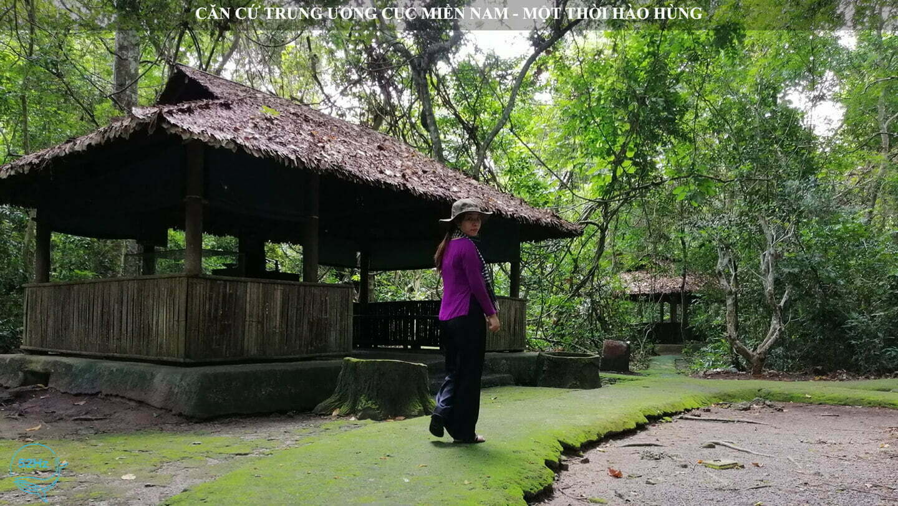
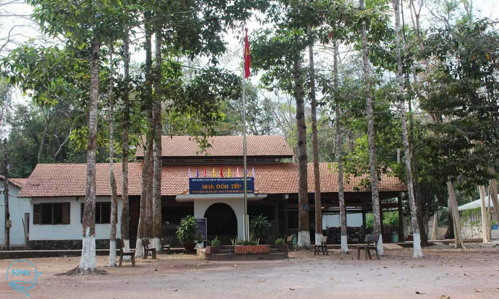
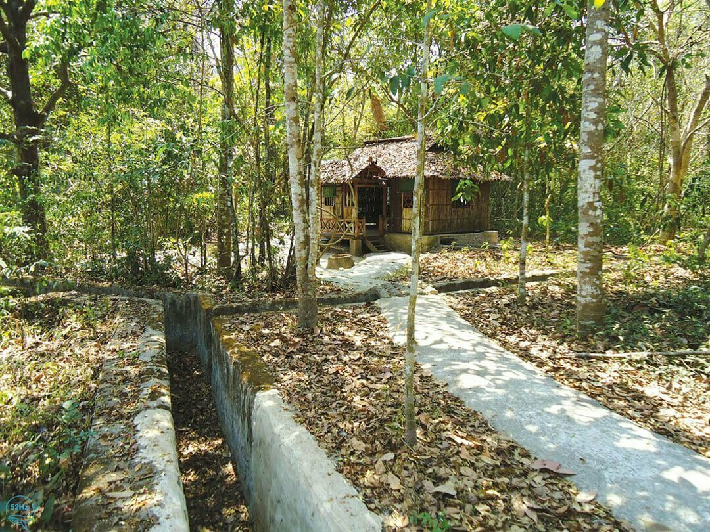
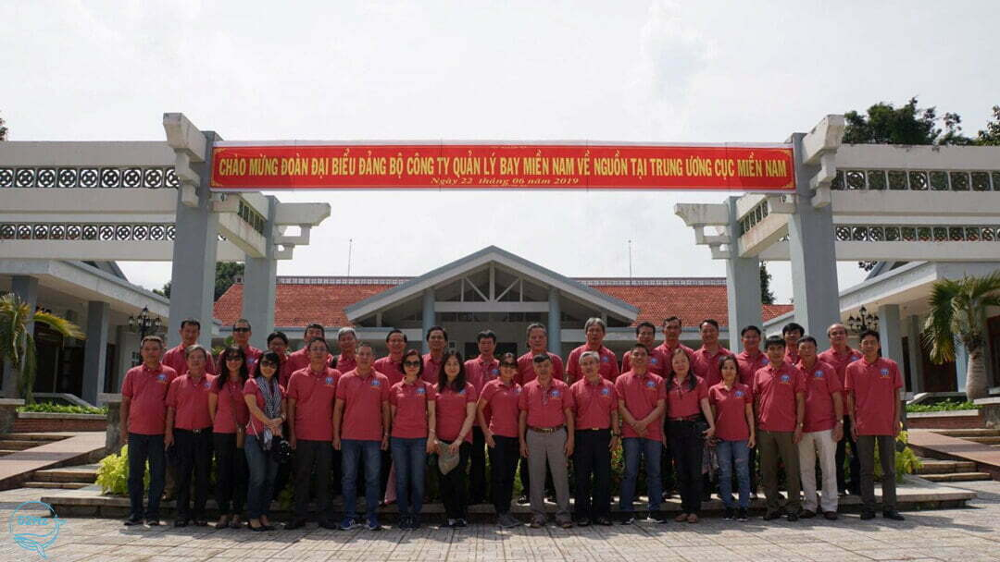
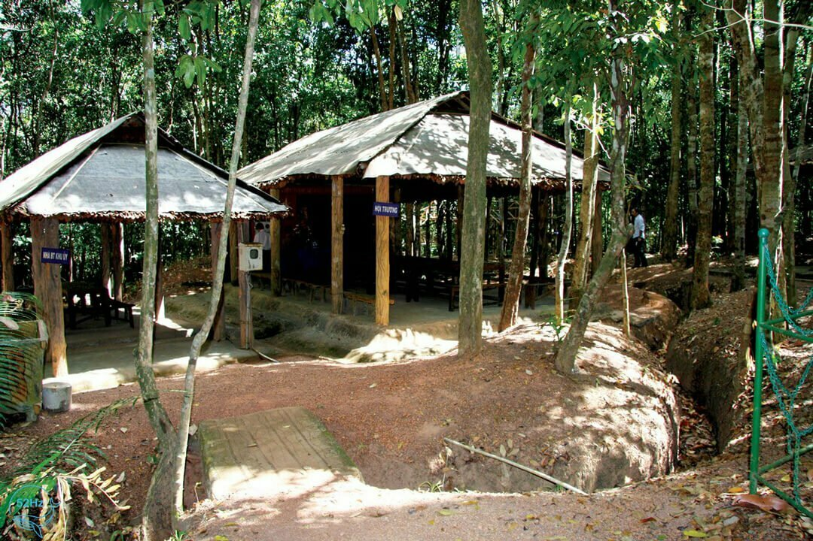
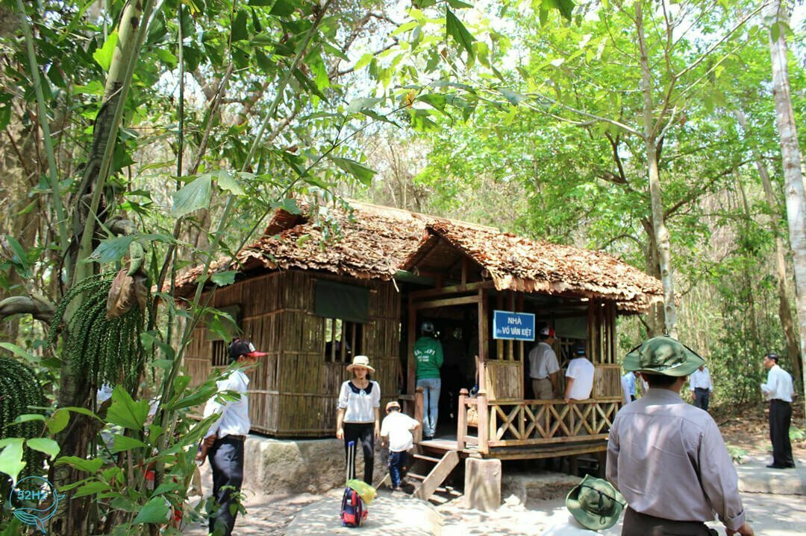
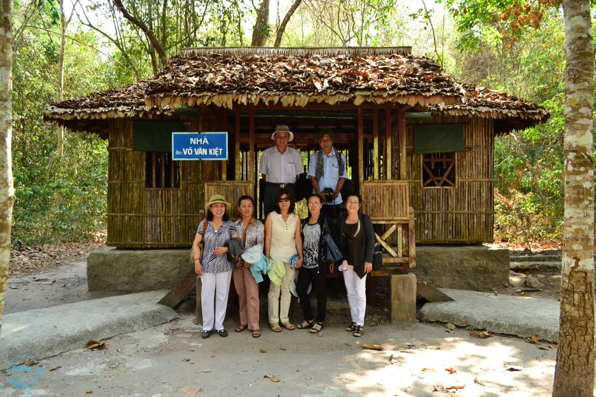

Căn Cứ Trung Ương Cục Miền Nam - Một Thời Hào Hùng
Căn Cứ Trung Ương Cục Miền Nam ẩn mình trong khu rừng sâu, tiếng chim líu lo và tiếng cây xào xạc như làm xua đi bao mệt mỏi, muộn phiền thời gian căng thẳng.
Căn cứ Trung ương Cục miền Nam là một di tích lịch sử hào hùng trên mảnh đất Tây Ninh. Nơi đây được mệnh danh là thủ đô của Cách mạng miền Nam, là nơi lưu lại tất cả những chứng tích, kỷ niệm về quãng thời gian hoạt động Cách mạng của dân tộc.
Cho đến tận ngày nay, căn cứ Trung ương Cục miền Nam đã thu hút rất nhiều du khách đến tham quan mỗi khi đi du lịch Tây Ninh, tưởng nhớ về cội nguồn của ông cha ta. Cùng 52Hz chúng mình hôm nay đến và tham quan nhé.
Giới Thiệu Căn Cứ Trung Ương Cục Miền Nam
Theo sử sách ghi chép lại, trong cả hai cuộc kháng chiến chống Pháp và Mỹ, Đông Nam Bộ nói chung và Tây Ninh nói riêng là địa bàn chiến lược vô cùng quan trọng. Thậm chí, đây còn được xem là cơ quan đầu não của Cách mạng giải phóng miền Nam. Và sau những bước phát triển mới của các phong trào nổ ra, hội nghị Ban Chấp hành Trung ương Đảng đã quyết định thành lập căn cứ Trung ương Cục miền Nam vào ngày 23 tháng 1 năm 1961.
Toàn cảnh căn cứ Trung ương Cục miền Nam
Căn cứ Trung ương Cục miền Nam viết tắt là R, đây là cơ quan cao nhất lãnh đạo trực tiếp Cách mạng miền Nam từ năm 1962. Nơi đây còn là nơi đề ra nhiều chiến lược, sách lược quan trọng trong cuộc kháng chiến chống Mỹ cho đến ngày giải phóng miền Nam hoàn toàn thắng lợi.
Với những giá trị đặc biệt của di tích, ngày 10 tháng 5 năm 2012, Thủ tướng Chính phủ đã quyết định xếp hạng cho Di tích lịch sử Căn cứ Trung ương Cục miền Nam là Di tích quốc gia đặc biệt theo Quyết định số 548/QĐ-TTG. Trước đó, vào năm 1990, khu căn cứ đã được công nhận là Di tích lịch sử Văn hóa cấp Quốc gia.
Căn Cứ Trung Ương Cục Miền Nam
Căn cứ Trung ương Cục miền Nam tọa lạc tại Rùm Đuôn, xã Tân Lập, huyện Tân Biên thuộc Tây Ninh. Nơi đây cách biên giới Việt Nam - Campuchia hơn 4km và cách thành phố Tây Ninh khoảng 60km hướng về phía Bắc.
Đường Đến Căn Cứ Trung Ương Cục Miền Nam
Chỉ cách trung tâm thành phố Hồ Chí Minh khoảng 87km và cách trung tâm thành phố Tây Ninh khoảng 60km. Vì vậy bạn có thể lựa chọn nhiều phương tiện khác nhau để thuận tiện trên đoạn đường di chuyển.
Đường đến Căn cứ Trung ương Cục miền Nam
Xuất phát từ trung tâm thành phố Hồ Chí Minh, đi theo tuyến đường qua Xuyên Á/QL22, bạn đi theo đường Trường Chinh để đến Xuyên Á/QL22 tại Trung Mỹ Tây. Sau đó, tiếp tục đi dọc theo QL22, ĐT 782 và ĐT 784 để đến đường Bời Lời tại Ninh Thạnh của thành phố Tây Ninh.
Dừng tại đây là bạn đã đến được trung tâm thành phố Tây Ninh. Từ đây, bạn men theo QL 22B đến cửa khẩu Xa Mát khoảng 44km. Sau đó tiếp tục rẽ phải vào ĐT 792. Tiếp tục di chuyển thêm 7km để đến một ngã ba, sau đó rẽ phải theo đường Căn cứ Trung ương Cục miền Nam khoảng 9km là bạn sẽ thấy khu di tích thoáng sau khu rừng phía trước.
Khám Phá Căn Cứ Trung Ương Cục Miền Nam
Khu căn cứ Trung ương Cục miền Nam có diện tích khoảng 70ha, được chia thành 3 phân khu chính: khu di tích, khu tưởng niệm và khu bảo tồn cảnh quan thiên nhiên - du lịch. Thời chiến tranh, nơi đây mặc dù nhiều lần bị đánh phá ác liệt nhưng nhờ sức chịu đựng bền bỉ cùng sự tài trí vẹn toàn của quân dân miền Nam nên đã trở thành chỗ dựa vững chắc cho Cách mạng Việt Nam.
Khám phá Căn cứ Trung ương Cục miền Nam
Nơi đây là nơi làm việc của nhiều vị lãnh đạo như Nguyễn Chí Thanh, Nguyễn Văn Linh, Phạm Hùng, Võ Văn Kiệt,…, là nơi quân và dân ta cùng chia sẻ những gian khổ trong ngày tháng kháng chiến trường kỳ hào hùng.
Khu Di Tích
Khu di tích của căn cứ Trung ương Cục miền Nam là một tòa nhà trưng bày rất nhiều hình ảnh và các hiện vật mà các nhà Cách mạng và chiến sĩ đã sử dụng trong những năm kháng chiến oanh liệt. Theo con số được thống kê lại, số hình ảnh và hiện vật được trưng bày tại đây lên đến 1000.
Khu trưng bày có gian trung tâm và hai gian cánh. Gian trung tâm là nơi trang trọng dành cho du khách đến đây và tưởng niệm Chủ tịch Hồ Chí Minh. Tiếp đến là khu tưởng niệm các chiến sĩ, các vị lãnh đạo và các anh hùng liệt sĩ.
Khu di tích tại căn cứ Trung ương Cục miền Nam
Bên cạnh đó, du khách khi đến đây không thể bỏ qua không gian của hội trường lớn tại căn cứ Trung ương Cục miền Nam. Nơi đây được trang trí đơn giản nhưng rất thu hút du khách tham quan bởi bản đồ quân sự, mô hình miêu tả lại diễn biến của chiến trường miền Nam lúc bấy giờ.
Ngay tại đây, du khách như được sống trong những giây phút hùng hồn, những thời khắc chiến đấu quyết liệt vẻ vang muôn thời của dân tộc ta. Các di tích như sa bàn “diễn biến chiến dịch phản công đánh bại cuộc hành quân Junction City của quân Mỹ” cũng được trưng bày tại đây.
Khu Tưởng Niệm
Khu tưởng niệm của căn cứ Trung ương Cục miền Nam có diện tích khá lớn bởi nơi đây tái hiện lại chi tiết đời sống thường ngày của những người lính cụ Hồ lúc bấy giờ tại chiến khu. Mặc dù tại khu tưởng niệm của căn cứ Trung ương Cục miền Nam tất cả đều là những thứ được phục dựng lại nhưng tất cả đều dựa trên các hình ảnh và lời kể nguyên mẫu. Điều này đã mang đến cho du khách những cảm giác chân thực như đang về lại thời gian Cách mạng dân tộc gian khổ khi xưa.
Nơi làm việc tại căn cứ Trung ướng Cục miền Nam
Các vật dụng như bàn, ghế, kệ, tủ… đều được sắp xếp đúng vị trí và ngay ngắn như trước đây. Du khách dễ dàng tham quan và hiểu được không gian sinh hoạt và làm việc của các vị lãnh đạo năm xưa. Bên cạnh đó, trong căn cứ Trung ương Cục miền Nam còn có một hầm chữ A nửa chìm nửa nổi được nối với nhau bằng hệ thống giao thông hào liên hoàn dài hàng chục km. Đây là nơi các đồng chí chiến sĩ có thể trú ẩn khi địch tấn công.
Khu Vực Bảo Tồn Cảnh Quan Thiên Nhiên Và Phát Triển Du Lịch
Khu di tích căn cứ Trung ương Cục miền Nam không chỉ mang đến cho du khách không gian lịch sử thiêng liêng mà còn là nơi để du khách tận hưởng thiên nhiên. Những hàng cổ thụ to sừng sững vững chắc nối dài trong khu rừng tạo nên không gian xanh mát cho du khách khi dừng chân nghỉ dọc đường.
Du khách tham quan tại căn cứ Trung ương Cục miền Nam
Căn cứ Trung ương Cục miền Nam ẩn mình trong khu rừng sâu, tiếng chim líu lo và tiếng cây xào xạc như làm xua đi bao mệt mỏi, muộn phiền thời gian căng thẳng. Điều này dường như mang đến cho khách những trải nghiệm, cảm giác tuyệt vời hơn trong chuyến tham quan của mình. Đặc biệt nơi đây còn có những món đặc trưng của quân đội, hãy thử các món ăn tại căn cứ Trung ương Cục miền Nam nhé.
Căn cứ Trung ương Cục miền Nam vẫn luôn là di tích lịch sử lưu giữ dấu ấn hào hùng trên mảnh đất Tây Ninh, niềm tự hào của dân tộc Việt Nam. Lịch sử chính là nền tảng để vững bước đi lên, là xây dựng lòng tự hào và biết ơn ông cha.
Bạn còn Chần chừ gì mà không cùng gia đình, bạn bè lên kế hoạch cho chuyến đi đến căn cứ Trung ương Cục miền Nam, tìm hiểu về các di tích lịch sử và thư giãn không gian thiên nhiên. Hy vọng những thông tin 52Hz gửi đến sẽ có ích cho chuyến đi của bạn. Chúc bạn có một chuyến đi an toàn và vui vẻ.
Lưu ý: nội dung trang web được lấy từ: 52Hz